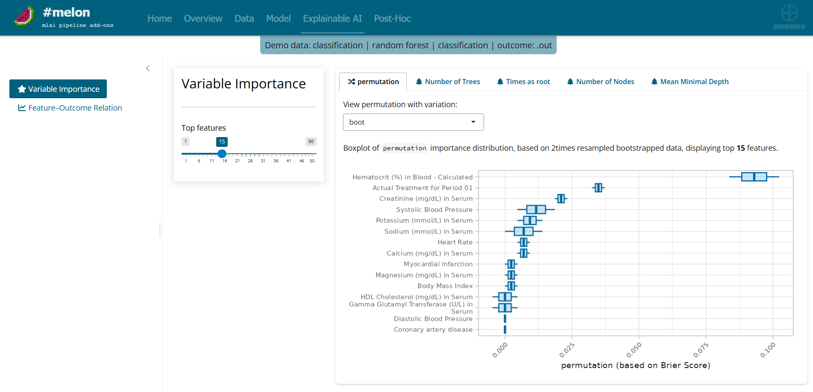

melon is an advanced analytics application designed to uncover meaningful relationships between baseline patient characteristics and clinical outcomes. By applying modern statistical and machine learning approaches, it helps teams understand how much of the observed outcome variability can be attributed to factors known at baseline. The app identifies the patient characteristics that have the strongest associations with efficacy and safety endpoints, enabling a data-driven understanding of outcome drivers. Users can explore the direction, magnitude, and nature of these relationships through intuitive visualizations and interactive analyses. melon supports the discovery of clinically relevant risk factors and patterns that may otherwise remain hidden in complex datasets. By transforming large amounts of study data into actionable insights, it facilitates evidence-based decision making and deeper scientific understanding. The result is a clear and efficient framework for investigating why outcomes differ across patients and which baseline factors matter most.